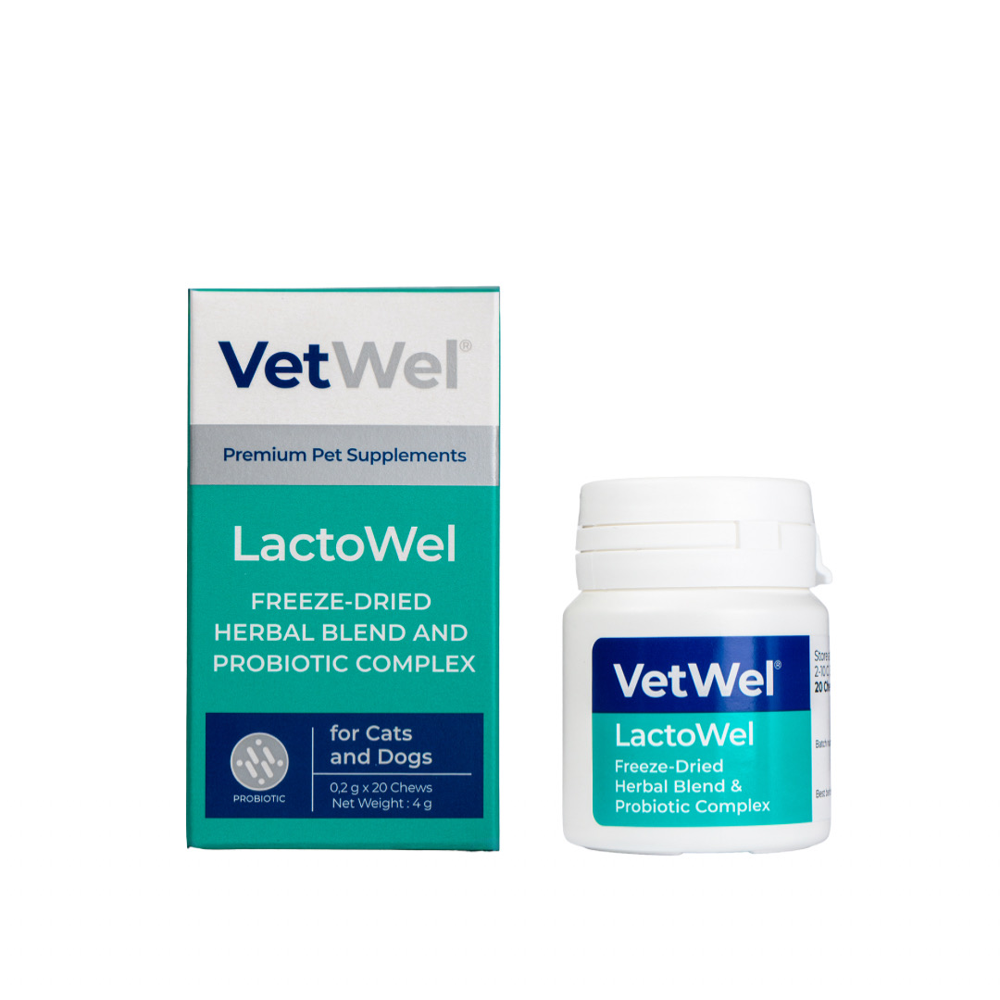

Ne İçin Kullanılır?
LactoWel®, bağırsak mikrobiyotasının desteklenmesine, sindirim sisteminin normal fonksiyonlarının korunmasına ve bağırsak–bağışıklık ekseninin tamamlayıcı olarak desteklenmesine yardımcı olmak amacıyla geliştirilmiştir.
VETWEL® ÜRÜN BİLGİSİ
TABLETProbiyotik mikroorganizmalar ve seçilmiş botanik bileşenleri bir araya getiren LactoWel®, bağırsak mikrobiyotasının, sindirim düzeninin, bağırsak bariyerinin ve normal bağışıklık fonksiyonunun desteklenmesine yönelik çok yönlü bir tamamlayıcı formüldür.

LactoWel®, bağırsak mikrobiyotasının desteklenmesine, sindirim sisteminin normal fonksiyonlarının korunmasına ve bağırsak–bağışıklık ekseninin tamamlayıcı olarak desteklenmesine yardımcı olmak amacıyla geliştirilmiştir.
Formülde yer alan probiyotik mikroorganizmalar, bağırsak mikrobiyotasının ve sindirim düzeninin desteklenmesine yardımcı olur.
LactoWel® formülündeki probiyotikler spor oluşturmayan, vejetatif yapıdaki bakterilerdir.
LactoWel® yalnızca probiyotik içeren bir ürün değildir. Seçilmiş bitkisel ekstrelerden oluşan botanik karışım, gastrointestinal sistemin bütüncül olarak desteklenmesine katkı sağlar.
Sağlıklı bağırsak mikrobiyotası ve normal gastrointestinal fonksiyonlar, bağırsak bariyerinin korunmasında önemli rol oynar. LactoWel® bu yapının besinsel olarak desteklenmesini amaçlar.
Gastrointestinal sistem, bağırsak mikrobiyotası ve bağışıklık sistemi birbiriyle yakından ilişkilidir. LactoWel® bu nedenle normal bağışıklık fonksiyonunun bağırsak–bağışıklık ekseni üzerinden desteklenmesine yönelik tamamlayıcı bir yaklaşım sunar.
LactoWel®'in temel farkı, probiyotik mikroorganizmaları seçilmiş botanik ekstrelerle aynı formül içerisinde bir araya getirmesidir.
Enterococcus faecium NCIMB 10415 ve Lactobacillus plantarum DSM 12837, bağırsak mikrobiyotasının ve normal sindirim fonksiyonlarının desteklenmesine yönelik formülün temel probiyotik bileşenleridir.
Sinirli ot, keklik otu, aynısefa ve civanperçemi gastrointestinal sistemin bütüncül desteklenmesine yönelik botanik grubun parçalarıdır.
Ekinezya ve seçilmiş botanik bileşenler, normal bağışıklık fonksiyonunun desteklenmesine yönelik formülasyon yaklaşımını tamamlar.
Okaliptus, çam yaprağı, akçaağaç yaprağı, huş kökü ve diğer botanik bileşenler formülün çok yönlü bitkisel destek yapısına katkı sağlar.
Probiyotik ve botanik grupların birlikte kullanılması, LactoWel®'in yalnızca bağırsaklara mikroorganizma sağlayan klasik bir probiyotik yaklaşımından daha geniş bir gastrointestinal destek formülü olarak konumlandırılmasını sağlar.
LactoWel® probiyotik mikroorganizmalar ile seçilmiş botanik ekstreleri aynı formül içerisinde bir araya getirir.
Her tablette minimum 1 × 10⁶ CFU canlı probiyotik bulunur.
LactoWel®'in bilimsel yaklaşımı; probiyotiklerin bağırsak mikrobiyotasıyla etkileşimi, intestinal bariyer, gastrointestinal fonksiyonlar ve bağırsak–bağışıklık ekseni üzerine yayımlanmış veteriner ve mekanistik literatürle birlikte değerlendirilir. Probiyotik etkiler suşa özgüdür; bu nedenle genel probiyotik verileri doğrudan tek bir ürüne veya suşa ait klinik etkinlik kanıtı olarak yorumlanmamalıdır.
Veteriner literatürü, köpek intestinal mikrobiyotasının gastrointestinal ve immün fonksiyonlarla ilişkili olduğunu; pro-, pre- ve sinbiyotiklerin mikrobiyotayı ve konak yanıtını etkileyebildiğini bildirir. Bununla birlikte etkilerin suş, doz ve klinik duruma göre değişebileceği özellikle vurgulanır.
Sağlıklı köpeklerde yürütülen kontrollü bir çalışmada çoklu probiyotik desteği fekal mikrobiyota kompozisyonu ve bazı immün belirteçlerle ilişkili değişiklikler göstermiştir. Bu çalışma LactoWel®'in kendisini veya içerdiği suşların tamamını test etmemiştir.
NCIMB 10415 ile yapılan mekanistik çalışmada intestinal epitel hücrelerinde bariyer bütünlüğü ve patojenik uyarıya verilen inflamatuvar/stres yanıtı üzerinde koruyucu yönde etkiler gözlenmiştir. Bulgular hücre modeli düzeyindedir; doğrudan LactoWel® klinik etkinlik çalışması değildir.
DSM 12837 için EFSA değerlendirmeleri suşun kimliğini ve yetkilendirilmiş teknolojik kullanım koşullarındaki güvenlik verilerini destekler. Bu kaynak, kedi veya köpeklerde gastrointestinal probiyotik etkinliği gösteren klinik kanıt olarak kullanılmamaktadır.
Kaynak yaklaşımı: Kaynaklar doğrudan ürün iddiası üretmek için değil; mikrobiyota, probiyotik mekanizmaları, bağırsak bariyeri ve suş düzeyi bilgilerinin bilimsel çerçevesini göstermek için seçilmiştir. Kanıt düzeyi kaynak türüne göre açıkça ayrılmıştır.
Uzun süren ishal, tekrarlayan kusma, iştahsızlık, kilo kaybı, hematokezya, melena veya tekrarlayan gastrointestinal problemlerde altta yatan neden veteriner hekim tarafından değerlendirilmelidir.
LactoWel® tanı, sıvı tedavisi, uygun diyet, antimikrobiyal veya diğer gerekli veteriner tedavilerinin yerine geçmez.
LactoWel® tablet formundadır.
Kediler: Her uygulamada 1 tablet.
Köpekler: Her 10 kg vücut ağırlığı için her uygulamada 1 tablet.
Günde 2 kez: Sabah – Akşam.
Genel kullanım yaklaşımında en az 7–10 gün. Süre veteriner hekimin değerlendirmesine göre düzenlenebilir.
LactoWel®, iki tanımlı probiyotik suş ile seçilmiş botanik ekstreleri aynı formülde bir araya getiren çok yönlü gastrointestinal destek ürünüdür. Bağırsak mikrobiyotasının, sindirim düzeninin, bağırsak bariyerinin ve normal bağışıklık fonksiyonunun desteklenmesine yönelik geliştirilmiştir. Formülün yaklaşımı bağırsak–bağışıklık eksenini desteklemektir; tanı veya gerekli veteriner tedavilerinin yerine geçmez.